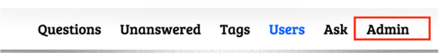
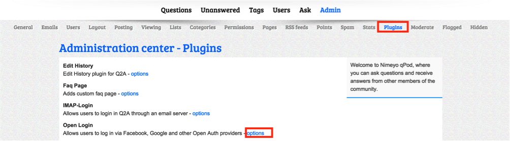
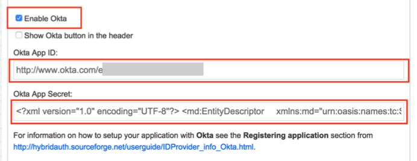
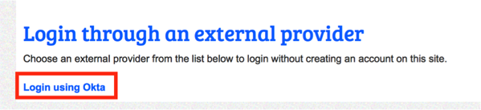

Sign into the Okta Admin Dashboard to generate this variable.


Done!
Notes:
IdP-initiated flows, SP-initiated flows, and Just In Time (JIT) provisioning are all supported.
For SP-initiated flows, go to https://qpod.nimeyo.com/okta/login?to=, scroll down to the Login through an external provider section, then select Login using Okta:
